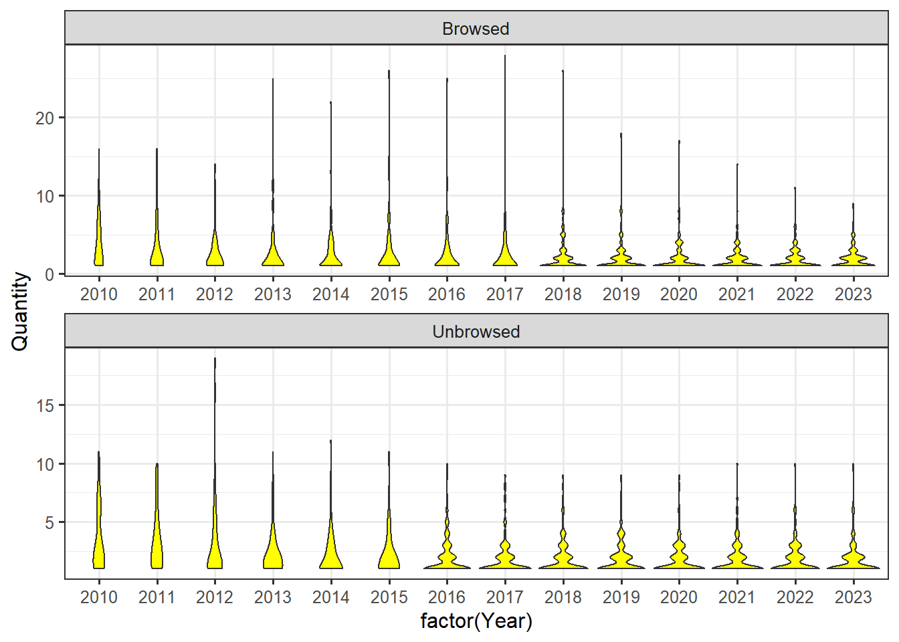
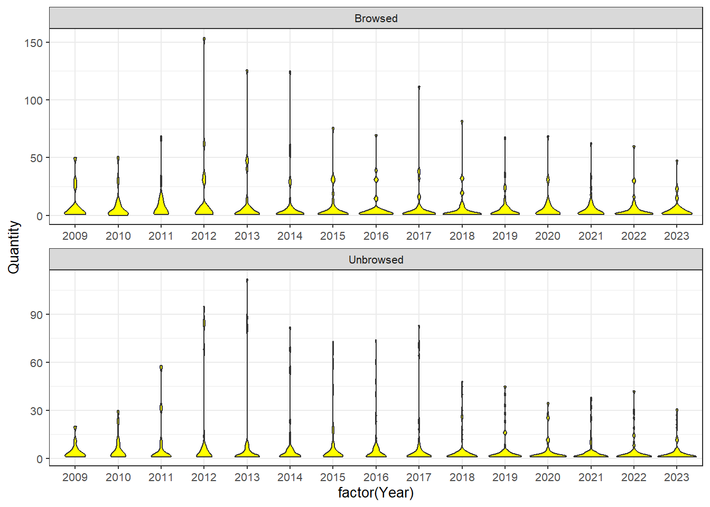

Import data from NTNU University museum: Natron. Marc did a pivot table in excel.
library(tidyverse)
-- Attaching core tidyverse packages ------------------------ tidyverse 2.0.0 --
v dplyr 1.1.3 v readr 2.1.4
v forcats 1.0.0 v stringr 1.5.0
v ggplot2 3.4.4 v tibble 3.2.1
v lubridate 1.9.2 v tidyr 1.3.0
v purrr 1.0.2
-- Conflicts ------------------------------------------ tidyverse_conflicts() --
x dplyr::filter() masks stats::filter()
x dplyr::lag() masks stats::lag()
i Use the conflicted package (<http://conflicted.r-lib.org/>) to force all conflicts to become errors
library(readxl)library(DT)library(lme4)
Loading required package: Matrix
Attaching package: 'Matrix'
The following objects are masked from 'package:tidyr':
expand, pack, unpack
Imported DensityAnno2023.xlsx, with 3 regions all tree taxa and 7 heightclasses
Data <-read_excel("data/DensityAnno2023.xlsx")
Importing productivity index. See productivity index.qmd.
# read dataproductivityIndex <-readRDS("data/productivityIndex.RDS")Data <- Data %>%left_join(productivityIndex, by=join_by(LocalityName)) |>filter( EngelskNavn !="Empty sample", HeightClass >0, Taxa !="0-Not Determined") %>%mutate(# add tree height in cm as the central value for each height categoryheight_cm =case_when( HeightClass ==1~25, HeightClass ==2~75, HeightClass ==3~125, HeightClass ==4~175, HeightClass ==5~225, HeightClass ==6~275, HeightClass ==7~325) )
Subset rows (20) and columns (10)
DT::datatable(Data[1:20,1:10])
Clean data
Obs - the Plot variable is used slightlu differently between sites (but consistently within sites)
Data |>count(Plot)
# A tibble: 8 x 2
Plot n
<chr> <int>
1 NE 2905
2 NH 6119
3 NV 5912
4 NW 2810
5 OH 5796
6 OV 5928
7 SE 2829
8 SW 2516
sum(is.na(Data$Plot))
[1] 0
I will just conform these.
Data <- Data |>mutate(Plot =case_when( Plot =="NW"~"OV", Plot =="NE"~"OH", Plot =="SW"~"NV", Plot =="SE"~"NH",.default = Plot ))
Data |>count(Plot)
# A tibble: 4 x 2
Plot n
<chr> <int>
1 NH 8948
2 NV 8428
3 OH 8701
4 OV 8738
Expanding the data set and adding rows for with quantity equal to zero for cases where a taxa was not found. Note that when I add a this zero, the height category and height_cm column is filled with NAs.
Data <- Data |>complete( Taxa,nesting( Region, LocalityName, productivityIndex, LocalityCode, Plot, Treatment, Year ),fill =list(Quantity =0))
`summarise()` has grouped output by 'LocalityCode', 'Year', 'Taxa'. You can
override using the `.groups` argument.
`geom_smooth()` using formula = 'y ~ x'
In the figure above we see little obvious differences in birch, pine and spruce, but large differences in rowan.
Since there is auto correlation (repeated measures at the same locatins every year), we could chose to visualise this as lines arther than points.
Data %>%filter(Region=='SUSTHERB Telemark',EngelskNavn=='Pine' )%>%ggplot()+geom_violin(aes(x=factor(Year),y=Quantity ),fill ="yellow")+facet_wrap(.~Treatment,ncol=1,scales ="free")+theme_bw(base_size =12)

Number of Pine at plot level (circles) in Telemark: low spread, but reduction of plots with high abundance from 2017.No temporal trends in UB
Data %>%filter(Region=='SUSTHERB Telemark',EngelskNavn=='Spruce' )%>%ggplot()+geom_violin(aes(x=factor(Year),y=Quantity ),fill ="yellow")+facet_wrap(.~Treatment,ncol=1,scales ="free")+theme_bw(base_size =12)
Number of Spruce at plot level (circles) in Telemark: low spread, but reduction of plots with high abundance from 2016, but more in B vs UB
Data %>%filter(Region=='SUSTHERB Telemark',EngelskNavn=='Birch' )%>%ggplot()+geom_violin(aes(x=factor(Year),y=Quantity ),fill ="yellow")+facet_wrap(.~Treatment,ncol=1,scales ="free")+theme_bw(base_size =12)
Number of Birch at plot level (circles) in Telemark: low spread, but reduction of plots with high abundance in B from 2013.Less temporal trends in UB
Data %>%filter(Region=='SUSTHERB Telemark',EngelskNavn=='Rowan' )%>%ggplot()+geom_violin(aes(x=factor(Year),y=Quantity ),fill ="yellow")+facet_wrap(.~Treatment,ncol=1,scales ="free")+theme_bw(base_size =12)
Number of Rowan at plot level (circles) in Telemark: low spread, but no reduction of plots in B and UB
Data %>%filter(Region=='SUSTHERB Trondelag')%>%ggplot()+geom_violin(aes(x=factor(Year),y=Quantity ),fill ="yellow")+facet_wrap(.~Treatment,ncol=1,scales ="free")+theme_bw(base_size =10)
Number of trees at plot level (circles) in Trondelag: low spread, but reduction of plots with high abundance in B from 2013 and in UB
Data %>%filter(Region=='SUSTHERB Trondelag',EngelskNavn=='Pine' )%>%ggplot()+geom_violin(aes(x=factor(Year),y=Quantity ),fill ="yellow")+facet_wrap(.~Treatment,ncol=1,scales ="free")+theme_bw(base_size =10)

Number of Pine trees at plot level (circles) in Trondelag: low spread, but reduction of plots with high abundance in B and in UB from 2013
Data %>%filter(Region=='SUSTHERB Trondelag',EngelskNavn=='Spruce' )%>%ggplot()+geom_violin(aes(x=factor(Year),y=Quantity ),fill ="yellow")+facet_wrap(.~Treatment,ncol=1,scales ="free")+theme_bw(base_size =10)
Number of Spruce trees at plot level (circles) in Trondelag: low spread, but reduction of plots with high abundance in UB from 2013.Less temporal trends in B
Data %>%filter(Region=='SUSTHERB Trondelag',EngelskNavn=='Birch' )%>%ggplot()+geom_violin(aes(x=factor(Year),y=Quantity ),fill ="yellow")+facet_wrap(.~Treatment,ncol=1,scales ="free")+theme_bw(base_size =10)
Number of Birch trees at plot level (circles) in Trondelag: low spread, but no reduction of plots with high abundance in B from 2013.Increasing temporal trends in UB
Data %>%filter(Region=='SUSTHERB Trondelag',EngelskNavn=='Rowan' )%>%ggplot()+geom_violin(aes(x=factor(Year),y=Quantity ),fill ="yellow")+facet_wrap(.~Treatment,ncol=1,scales ="free")+theme_bw(base_size =10)
Number of rowan trees at plot level (circles) in Trondelag: low spread, but some reduction of plots with high abundance in B and UB
Data %>%#filter(Region=='SUSTHERB Telemark',EngelskNavn=='Pine' )%>%ggplot()+geom_violin(aes(x=factor(Year),y=Quantity ),fill ="yellow")+facet_wrap(.~Treatment,ncol=1,scales ="free")+theme_bw(base_size =10)
Number of pine trees at plot level (circles) in Telemark: low spread,
Data %>%filter(EngelskNavn=='Pine' )%>%ggplot()+geom_violin(aes(x=factor(Year),y=Quantity ),fill ="yellow")+facet_wrap(.~Treatment,ncol=1,scales ="free")+theme_bw(base_size =10)
Number of trees at plot level (circles) across all regions: low spread, but some reduction of plots with high abundance in B and UB from 2013
Data %>%filter(EngelskNavn=='Spruce' )%>%ggplot()+geom_violin(aes(x=factor(Year),y=Quantity ),fill ="yellow")+facet_wrap(.~Treatment,ncol=1,scales ="free")+theme_bw(base_size =10)
Number of spruce trees at plot level (circles) across all regions: low spread, but some reduction of plots with high abundance in B and UB
Data %>%filter(EngelskNavn=='Birch' )%>%ggplot()+geom_violin(aes(x=factor(Year),y=Quantity ),fill ="yellow")+facet_wrap(.~Treatment,ncol=1,scales ="free")+theme_bw(base_size =10)
Number of birch trees at plot level (circles) across all regions: low spread, no reduction of plots with high abundance in B and UB
Data %>%filter(EngelskNavn=='Rowan' )%>%ggplot()+geom_violin(aes(x=factor(Year),y=Quantity ),fill ="yellow")+facet_wrap(.~Treatment,ncol=1,scales ="free")+theme_bw(base_size =10)
Number of rowan trees at plot level (circles) across all regions: low spread, no reduction of plots with high abundance in B and UB
Data %>%filter(Region=='SUSTHERB Trondelag',EngelskNavn=='Pine' )%>%ggplot()+geom_point(size=3,alpha=.5,aes(x=factor(Year),y=Quantity ),fill ="yellow")+facet_wrap(.~Treatment,ncol=1,scales ="free")+theme_bw(base_size =10)
Data %>%filter(Region=='SUSTHERB Trondelag',EngelskNavn=='Birch' )%>%ggplot()+geom_point(size=3,alpha=.5,aes(x=factor(Year),y=Quantity ),fill ="yellow")+facet_wrap(.~Treatment,ncol=1,scales ="free")+theme_bw(base_size =10)
Data %>%filter(Region=='SUSTHERB Trondelag',EngelskNavn=='Spruce' )%>%ggplot()+geom_point(size=3,alpha=.5,aes(x=factor(Year),y=Quantity ),fill ="yellow")+facet_wrap(.~Treatment,ncol=1,scales ="free")+theme_bw(base_size =10)
Data %>%filter(Region=='SUSTHERB Trondelag',EngelskNavn=='Rowan' )%>%ggplot()+geom_point(size=3,alpha=.5,aes(x=factor(Year),y=Quantity ),fill ="yellow")+facet_wrap(.~Treatment,ncol=1,scales ="free")+theme_bw(base_size =10)
Data %>%filter(Region=='SUSTHERB Trondelag',EngelskNavn=='Birch', HeightClass=="7" )%>%ggplot()+geom_violin(aes(x=factor(Year),y=Quantity ),fill ="yellow")+facet_wrap(.~Treatment,ncol=1,scales ="free")+theme_bw(base_size =10)
Warning: Groups with fewer than two data points have been dropped.
Groups with fewer than two data points have been dropped.
Groups with fewer than two data points have been dropped.
Number of birch trees at plot level (circles) in Trøndelag at harvest class 7: increased in UB from 2018 and to lesser extent in B from 2019
Data %>%filter(Region=='SUSTHERB Trondelag',EngelskNavn=='Spruce', HeightClass=="7" )%>%ggplot()+geom_violin(aes(x=factor(Year),y=Quantity ),fill ="yellow")+facet_wrap(.~Treatment,ncol=1,scales ="free")+theme_bw(base_size =10)
Number of spruce trees at plot level (circles) in Trøndelag at harvest class 7: increased in B from 2016 and to lesser extent in UB from 2019
Data %>%filter(Region=='SUSTHERB Trondelag',EngelskNavn=='Rowan', HeightClass=="7" )%>%ggplot()+geom_violin(aes(x=factor(Year),y=Quantity ),fill ="yellow")+facet_wrap(.~Treatment,ncol=1,scales ="free")+theme_bw(base_size =10)
Warning: Groups with fewer than two data points have been dropped.
Number of Rowan trees at plot level (circles) in Trøndelag at harvest class 7: increased in UB from 2015. No in B
Data %>%filter(EngelskNavn=='Rowan', HeightClass=="7" )%>%ggplot()+geom_violin(aes(x=factor(Year),y=Quantity ),fill ="yellow")+facet_wrap(.~Treatment,ncol=1,scales ="free")+theme_bw(base_size =10)
Warning: Groups with fewer than two data points have been dropped.
Warning in max(data$density): no non-missing arguments to max; returning -Inf
Warning: Computation failed in `stat_ydensity()`
Caused by error in `$<-.data.frame`:
! replacement has 1 row, data has 0
Data %>%filter(Region=='SUSTHERB Trondelag',EngelskNavn=='Rowan', HeightClass=="1")%>%ggplot()+geom_violin(aes(x=factor(Year),y=Quantity ),fill ="yellow")+facet_wrap(.~Treatment,ncol=1,scales ="free")+theme_bw(base_size =10)
Number of rowan trees at plot level (circles) in Trøndelag at harvest class 1:
Data %>%filter(Region=='SUSTHERB Trondelag',EngelskNavn=='Rowan', HeightClass=="2")%>%ggplot()+geom_violin(aes(x=factor(Year),y=Quantity ),fill ="yellow")+facet_wrap(.~Treatment,ncol=1,scales ="free")+theme_bw(base_size =10)
Data %>%filter(Region=='SUSTHERB Trondelag',EngelskNavn=='Rowan', HeightClass=="3")%>%ggplot()+geom_violin(aes(x=factor(Year),y=Quantity ),fill ="yellow")+facet_wrap(.~Treatment,ncol=1,scales ="free")+theme_bw(base_size =10)
Warning: Groups with fewer than two data points have been dropped.
Groups with fewer than two data points have been dropped.
Groups with fewer than two data points have been dropped.
Groups with fewer than two data points have been dropped.
Groups with fewer than two data points have been dropped.
Groups with fewer than two data points have been dropped.
Groups with fewer than two data points have been dropped.
Modelling
Subsetting data set
We will use a frequentist approach to mixed effects modelling with lme4. We have a random structure given by the sampling design. Our fixed structure is defined from theoretical expectations (a model set) and no model selection is done. Effect sizes are interpreted using the estimated and the errors, simulating a normal distribution for the estimates. P-values are not reported.
We will not look at the temporal trends, but rather focus on the last year. The last year with data is 2023, which is 15-11 years of data, depending on the region.
Data <- Data %>%mutate(yearsSinceStart =case_when(# Check !! Hedmark Akershus sites were initiated at different times Region =="SUSTHERB Hedmark-Akershus"~ Year -2012, Region =="SUSTHERB Telemark"~ Year -2009, Region =="SUSTHERB Trondelag"~ Year -2008 ))
It’s a shame to cut 4 years with data, so I will just use the 2023 data for all regions. With only three regions it is possible to interpret the regional affect and duration effect combined.
modelData <- Data %>%filter( Year ==2023,!LocalityName %in%c("Hedmark | Nes 1 | Winter browsing","TrOndelag | Selbu_Fl | Winter browsing","TrOndelag | Malvik | Winter browsing","TrOndelag | Hi_tydal | Winter browsing" ) )# same as:# modelData <- filter(Data, Year == 2023)# %>% kalles 'pipe'. Kan også skrives |>
We can filter by species, like I do below, but first we will look at all species combined.
Better. Perhaps a gamma or poisson model would be even better still.
Tables
When (if) the model is done, here is how you can get a nice summary table.
stargazer::stargazer(q1_gamma, type ="text", # change to latex to get it directly into a manuscriptdigits =3,star.cutoffs =c(0.05, 0.01, 0.001),digit.separator ="")